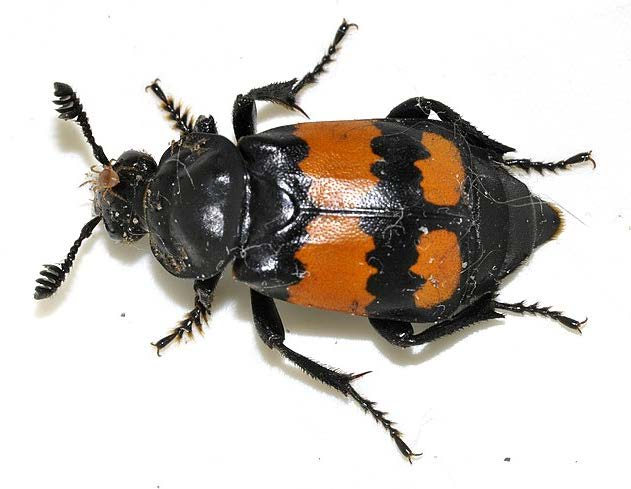
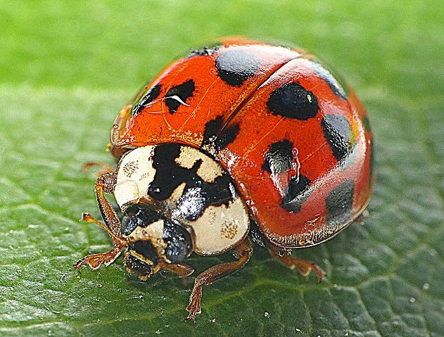
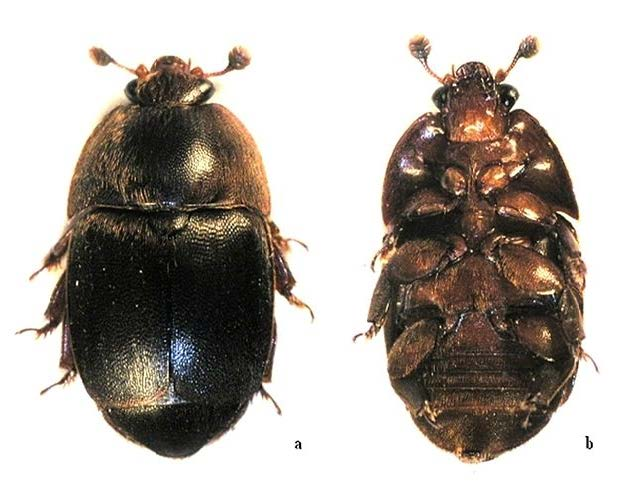
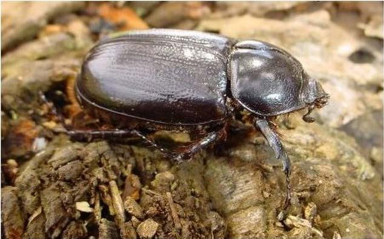
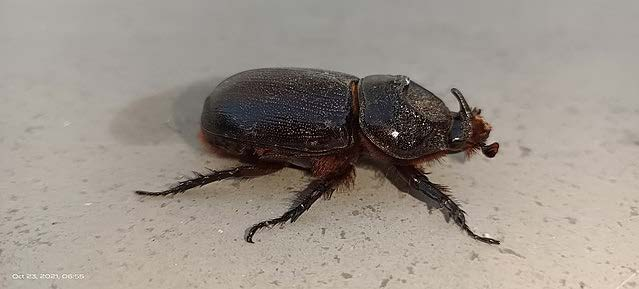
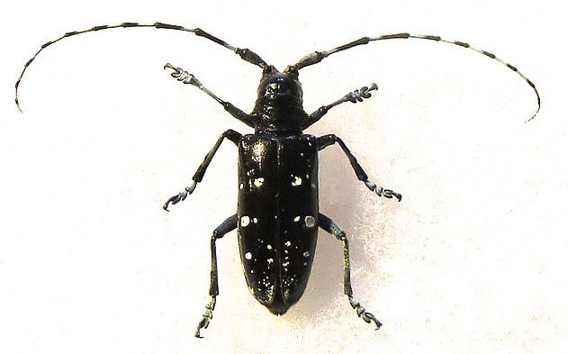
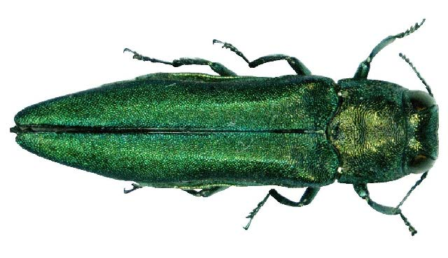
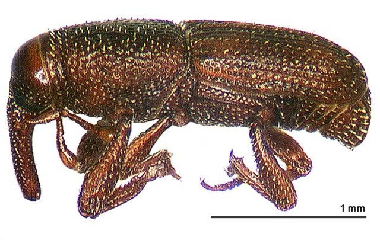
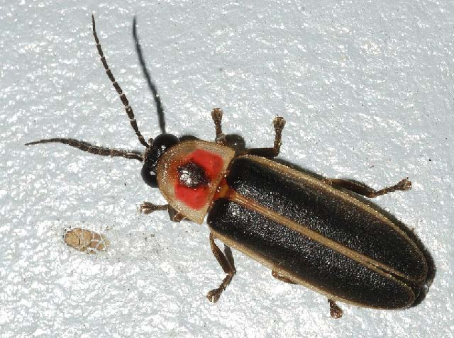
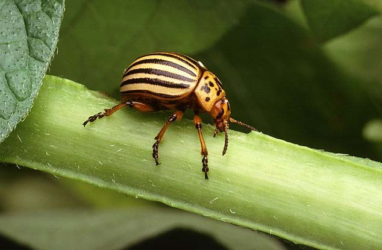

4 homology
Aim
Build a molecular species phylogeny using orthologues identified from an orthology database.
Learning outcomes
- What is needed as input to build a molecular species phylogeny?
- How do we have confidence in such a species tree?
Collecting input data from an orthology database
There are many publicly accessible orthology databases, or tools that can be used to delineate orthology with your own datasets. Today, we will use data from OrthoDB. OrthoDB is part of the SwissOrthology resource.
From your browser, search for orthodb.org or go to https://www.orthodb.org/. We will use the OrthoDB website to select our species/clade of interest and query the database to retrieve orthologous groups that we can use to build a species tree.

Because the beetles are wonderful, we will use them as the example group for exploring the orthology data and building our molecular species tree. We will therefore used the navigation tool of OrthoDB to narrow our search to available beetle species (Coleoptera): Eukaryota ⇒ Metazoa ⇒ Arthropoda ⇒ Hexapoda ⇒ Insecta ⇒ Holometabola ⇒ Coleoptera.

The Search at: and Species to display: boxes should be automatically updated now to show “Coleoptera” and “all 15 selected”. Click Submit with no search terms to first retrieve all orthologous groups delineated across these 15 species of beetles.
For the orthologous groups returned by the query, summary information is displayed:
- Orthologous group names/descriptions (if available)
- Counts of genes and species per orthologous group

Question: How many groups in total are returned? What kinds of orthologous groups would we need to find if we want to build a species tree, and why?
Answer
14753 groups are returned. However, it is best to use single-copy orthologues to build a species tree, because they easily allow to calculate the exact evolutionary distance between sequences. Using multi-copy orthologues drastically complicates things as you cannot be sure of the homology relationships between all the genes (orthology vs paralogy).
We can use the Advanced navigation tool of OrthoDB to narrow our search for orthologous groups that will be useful for building a species phylogeny. Using the “Phyloprofile” filter we can ask the query to return only orthologous groups that are “Present in all species” and that are “Single-copy in all species”. Click Submit with no search terms to retrieve all orthologous groups delineated across these 15 species of beetle, now with the phyloprofile filtered set.
Note
Direct URL in case the search with filters failed for you.
Question: Did the filtering work - how do you know? How many groups in total are now returned? Why are there so few groups compared to the last query that returned all orthologous 14‘753 groups?
Answer
The filtering worked: we now have only 1225 groups, all composed of 1 gene per species. The previous query returned more results because a lot of groups contained genes in several but not all species, and these groups were filtered out during this search.
Explore some specific results of your query, e.g. the ones for group 10000at7041 described as “phosphatidylinositol 4-kinase beta”:
- The Group hierarchy view allows navigating back up the tree of life to the metazoan last common ancestor
- Functional descriptions list Gene Ontology (GO) terms and InterPro domains that have been mapped to genes belonging to this orthologous group. They provide clues as to the likely function of all genes in the orthologous group
- Evolutionary descriptions summarise the group’s phyletic profile, its relative rate of protein sequence divergence, and the “average” gene architecture (structure in terms of introns and exons and total length in amino acids)

Expand the Orthologs by organism table to view members of this orthologous group:
Questions:
- What is the average length (AAs) of these proteins? Are there any substantially longer or shorter proteins than the average?
- Why might some be rather different from the average? What impacts could this have when it comes to using these sequences for building a phylogeny?
Answer
The average length of these proteins is ~930 AAs. There are no substantially longer proteins, but we can notice much shorter proteins (349 AAs, 613 AAs…) that are displayed with one or two exclamation marks ! depending on the length difference. These short proteins might be real but more likely, they indicate an annotation problem (for example a case of automatic annotation that did not pick-up the full length protein). These proteins can severely impact species tree creation because they will cause a bias in the multiple alignment step.
Additional information about each gene can be viewed by clicking on the chevron buttons > or >>, e.g. for the Tribolium castaneum orthologue:

Before we download any orthology data, let’s create a working directory for this exercise, starting by opening a terminal on the Workspace if you’ve not already got one open. Then, from the /workspace/biodivinfo/ directory, create a new directory (mkdir) and navigate into the new directory (cd):
cd /workspace/biodivinfo/
mkdir Session2
cd Session2/
To build a phylogeny we need to download the sequences: on the top right of each orthologous group view you can access the protein sequences using “View Fasta”.

A new tab will open displaying the protein sequences, copy the URL of the page so we can use it to download the sequences directly in the next step.

Now fetch the fasta formatted sequences from OrthoDB from the command line using curl, give the downloaded fasta data a filename (-o) using the orthologous group ID “10000at7041.fasta” and make sure that the URL is placed inside quotes:
curl -o 10000at7041.fasta "https://data.orthodb.org/v11/fasta?id=10000at7041&species=7041"

If fetching from OrthoDB failed, you can get the file from the folder with data files for the practical instead
cp /workspace/biodivinfo/data/Session2/10000at7041.fasta .
Use the file explorer on the Workspace to view the downloaded fasta file.

We need to replace the colon “_0:” in the protein identifiers with an underscore “_0_” because some downstream tools do not accept colons in identifiers. We will perform such replacement using the command line function sed:
sed -i 's/_0:/_0_/g' 10000at7041.fasta

Building a tree from single-copy orthologues
There are many different software tools available for sequence alignment and phylogenetics, the logic however remains basically the same no matter the software, we need to:
- Align all the protein sequences as a multiple sequence alignment: we use MAFFT
- Filter/trim the alignment to keep only well-aligned regions: we use TrimAl
- Use the filtered alignment to build a molecular phylogeny: we use RAxML
Multiple sequence alignment using MAFFT
The basic command for running MAFFT is:

We can run MAFFT in the “quiet” mode to avoid progress reports (--quiet). We can proceed to build the alignment from the command line as follows, naming the output alignment file appropriately by adding .aln. to the output filename:
mafft --quiet --auto 10000at7041.fasta > 10000at7041.aln.fasta
Use the file explorer on the Workspace to open the multiple sequence alignment file.
If MAFFT failed, you can get the file from the folder instead
cp /workspace/biodivinfo/data/Session2/10000at7041.aln.fasta .
You might otherwise use your favourite alignment viewer (e.g. JalView) for a more colourful and meaningful visualisation. To download the file from the Workspace, find the file in the explorer, right-click on the file, and select Download.

Here are two examples of the JalView visualisation:

Questions:
- From the two visualisations above showing the start and then the end of the alignment - which end seems more complete and well-aligned?
- What do you think an alignment region would need to have in order to be most useful for reconstructing the phylogeny, and why?
Answer
The end of the alignment seems more complete and well-aligned. To reconstruct the phylogeny, an alignment region should not have too many mutations: if there are no common regions between the proteins, they will be impossible to align to each other and it will impossible to build the phylogeny. On the other hand, an alignment without mutations should also be avoided because it contains no signal to discriminate between species.
Filter/trim using TrimAl
We could manually go through the multiple sequence alignment and select regions that we think would be the best to use for building the phylogeny - but this is very subjective and not at all reproducible. Therefore there are several tools designed to help select “useful” regions from multiple sequence alignments and extract them to use for subsequent tree building steps.
The basic command for running TrimAl is:
TrimAl has many parameters that one can tune depending on your input dataset, as well as a few “default” options such as:
-nogaps: remove all positions with gaps in the alignment-strict: use automatic selection on “strict” mode-automated1: use a heuristic selection of the automatic method based on similarity statistics
Here we will use the -automated1 option, a heuristic approach that selects the best automatic method to trim a given alignment, and is optimised for trimming alignments that will be analysed by Maximum Likelihood phylogenetic analyses. The output filename we will label with .trm. i.e. after trimming has been performed. We will also ask TrimAl to print out an HTML output to visualise the regions selected and rejected from the input full alignment:
trimal -in 10000at7041.aln.fasta -out 10000at7041.aln.trm.fasta -automated1 -htmlout 10000at7041.aln.trm.html

You can now download (same as how you downloaded the alignment before trimming) and open 10000at7041.aln.trm.html (e.g. Firefox or another browser) to view the results.
If trimAl failed, you can get the files from the folder instead
cp /workspace/biodivinfo/data/Session2/10000at7041.aln.trm.fasta .
cp /workspace/biodivinfo/data/Session2/10000at7041.aln.trm.html .
TrimAl’s HTML output shows the regions selected (Selected Cols: highlighted in grey) and the regions rejected during the filtering process:
Phylogeny building using RAxML
We will now use the filtered alignment as input to RAxML to build a Maximum Likelihood phylogeny. Because we have single-copy orthologues - one from each of our 15 beetle species - we can have some expectation that this gene tree would represent the species tree.
For reference, species names and their OrthoDB taxonomic identifiers:
| OrthoDB taxonomic identifiers | Species name | Beautiful beetles |
|---|---|---|
| 110193_0 | Nicrophorus vespilloides |  |
| 115357_0 | Harmonia axyridis |  |
| 116153_0 | Aethina tumida |  |
| 1629725_0 | Oryctes borbonicus |  |
| 166361_0 | Onthophagus taurus |  |
| 217634_0 | Anoplophora glabripennis |  |
| 224129_0 | Agrilus planipennis |  |
| 41139_0 | Coccinella septempunctata |  |
| 41895_0 | Tribolium madens |  |
| 50390_0 | Diabrotica virgifera |  |
| 7048_0 | Sitophilus oryzae |  |
| 7054_0 | Photinus pyralis |  |
| 7070_0 | Tribolium castaneum |  |
| 7539_0 | Leptinotarsa decemlineata |  |
| 77166_0 | Dendroctonus ponderosae |  |
RAxML has many options! View the summary of parameters/options using the -h flag, for the full explanations you’ll need to check out the RAxML manual later:
raxmlHPC-SSE3 -h | more

The three main required input options are:
-s sequenceFileName: your filtered alignment file-n outputFileName: the name you want to give the output files-m substitutionModel: the substitution model you want RAxML to use
Phylogeny estimation using protein sequences requires the selection of a protein substitution model. Divergence among sequences can be modelled with a matrix that describes probabilities of amino acid substitutions (mutations that cause one amino acid to be replaced by another). This corresponds to a model of evolution in which amino acids mutate randomly and independently from one another but according to some predefined probabilities depending on the properties of the amino acid itself.
We will use the JTT (Jones-Taylor-Thornton) with the GAMMA model of rate heterogeneity: PROTGAMMAJTT. For speed in the class we will also specify that RAxML should use its rapid bootstrap algorithm to conduct a rapid bootstrap analysis and search for the best-scoring ML tree in one single programme run: -f a, we also need to indicate how many bootstraps RAxML should perform: -N 10 (normally many more, but for the class we will perform only 10 samples). For reproducibility of the optimisation steps, RAxML additionally requires us to define the random starting seed for parsimony e.g. -p 12345 and for the subsequent ML search e.g. -x 12345.
Launch RAxML with the options defined for a rapid bootstrap & ML analysis:
raxmlHPC-SSE3 -s 10000at7041.aln.trm.fasta -f a -N 10 -p 12345 -x 12345 -m PROTGAMMAJTT -n 10000at7041
RAxML should take less than 2 minutes to estimate the phylogeny with 10 bootstrap samples, printing the progress log to the terminal.

Question: What is “bootstrap analysis” and why would we be interested in running it?
Answer
Bootstrapping is a type of test that uses random sampling with replacement (resampling methods) - it uses sampling with replacement to assess the reliability of sequence-based phylogenies. Bootstrap values in a phylogenetic tree indicate how many times the same branch is observed when repeating the generation of a phylogenetic tree on a resampled set of data and thus give information about the stability of the tree structure (i.e. the branching order). In bootstrap resampling, we generate artificial sequences by randomly sampling sites of the original sequences with replacement to produce a different composition of the data with the same sequence length as the original alignment.
If RAxML failed, you can get the files from the folder instead
cp /workspace/biodivinfo/data/Session2/RAxML_bestTree.10000at7041 .
cp /workspace/biodivinfo/data/Session2/RAxML_bipartitions.10000at7041 .
cp /workspace/biodivinfo/data/Session2/RAxML_bipartitionsBranchLabels.10000at7041 .
cp /workspace/biodivinfo/data/Session2/RAxML_bootstrap.10000at7041 .
cp /workspace/biodivinfo/data/Session2/RAxML_info.10000at7041 .
RAxML output:
_bestTree: best-supported phylogeny_bipartitions: best tree with bootstrap results on nodes_bipartitionsBranchLabels: best tree with bootstrap results on branches_bootstrap: tree from each bootstrap sample_info: information on the analysis performed

Now we will visualise the results: the phylogenetic tree. Open the “bipartitions” file (RAxML_bipartitions.10000at7041) and copy the contents (the newick-format tree).
In your browser go to the iTOL Interactive Tree Of Life website and open the Upload page from the main navigation bar.

Enter a Tree name, e.g. tree1. Paste the RAxML result bipartitions tree into the Tree text: box. Click Upload to load your tree onto the iTOL platform.

By default, your tree should be displayed similarly to this one:

Use the Control Panel on the right of the tree to select the Advanced tab and choose to display Bootstraps as Text.

If you did not manage to visualise the tree
You can find it on Gitpod at /workspace/biodivinfo/data/Session2/tree_10000at7041.jpg. Or you can directly see it here.
{kind=link}
Questions:
- Why would some nodes obtain 100% bootstrap support while others are weaker and others are very low indeed?
- How can we know if our “species tree”, made from just one single-copy orthologous group, reflects the reality of these species’ evolutionary relationships?
- What would we need to do next in order to improve the confidence in our molecular “species phylogeny”?
Answer
- Some nodes are very stable and do not change during bootstrap while others do. These weakers nodes indicate that the branching varies and may not be an accurate representation of the species tree
- We can compare the tree with what is known in the literature. Alternatively, we can compare this tree with species tree made from other single-copy orthologous groups. If all the trees concur, this is a very strong indicator of the species’ evolutionary relationships
- Create trees from other single-copy orthologous groups and reconcile them with a tree from the literature if it exists.